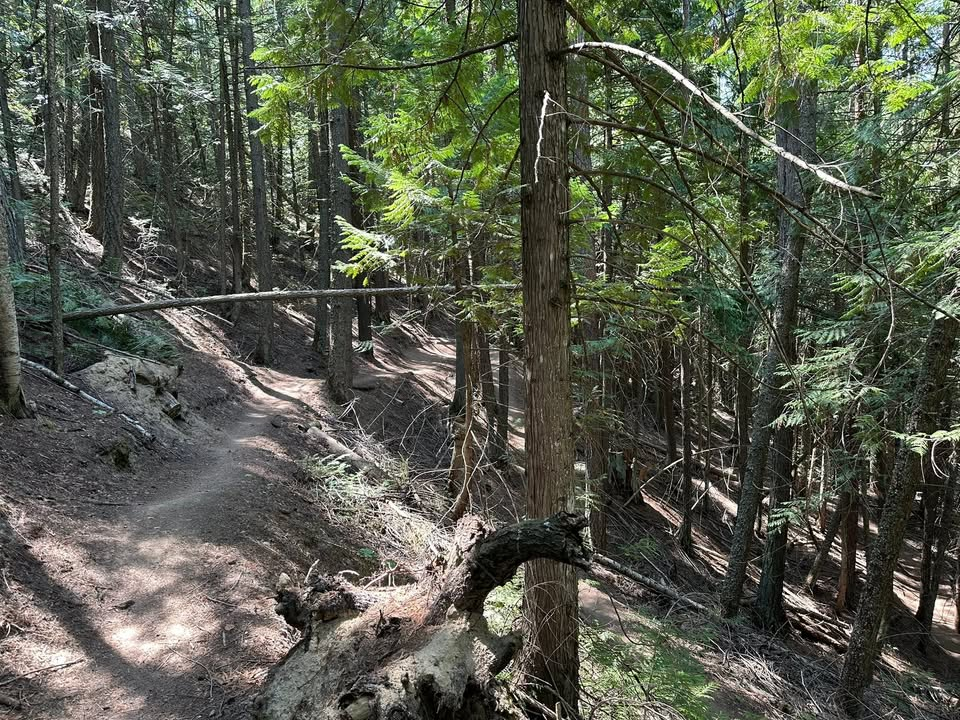
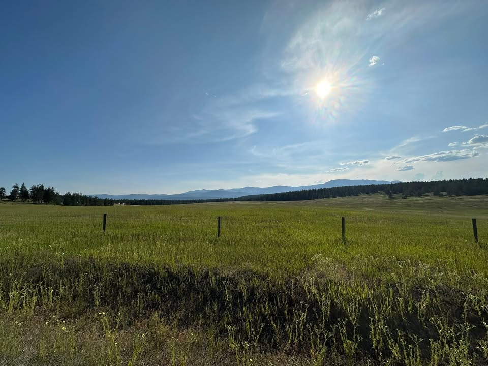
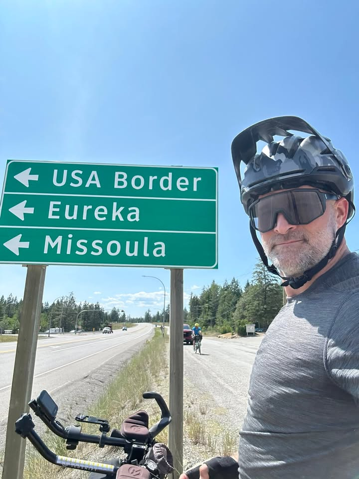
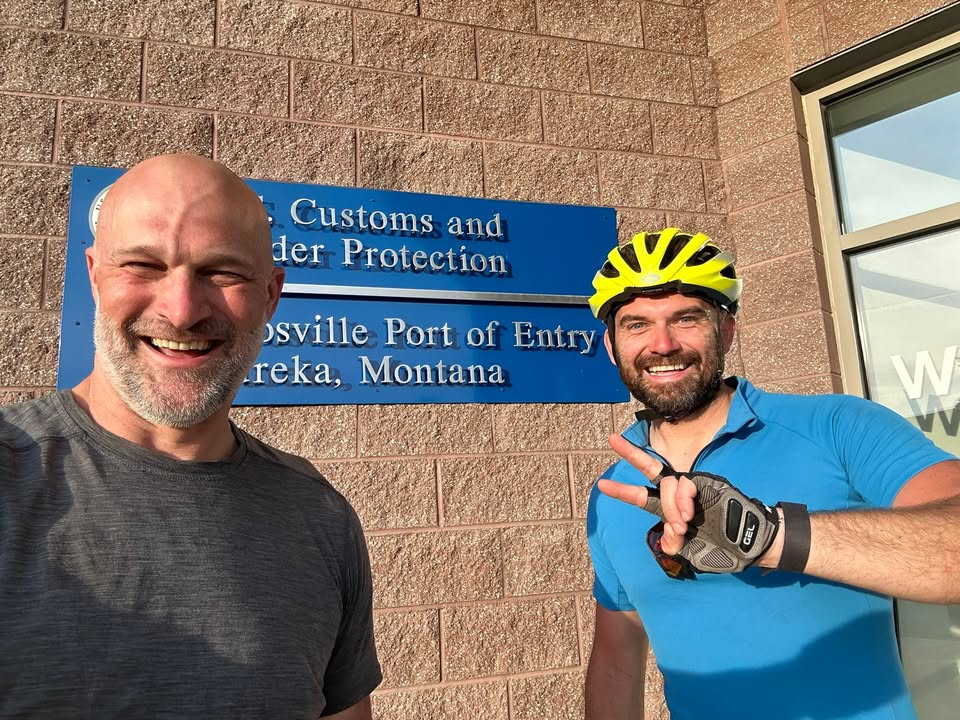
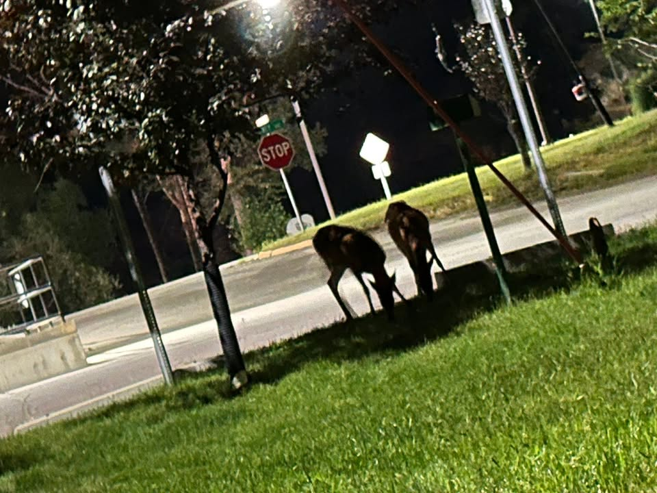

We got out of the hotel pretty late, enjoying the amenities until the very last minute. We rode into downtown and grabbed a quick bite at a bagel shop. On the way there, my electronic shifter informed me that it had a low battery. Being a critical item, I definitely wanted to get a little charge on that before the day started, so I plugged it in at the bagel shop.
Fernie is an amazing city; however, on the way out of town while talking to some retirees, I learned that it has an issue with housing being so expensive that the people who work there have a hard time living there. But I can testify to why people are drawn to the city. It’s surrounded by mountains on all sides—a mountain biker's paradise in the summer and a skier's paradise in the winter. When I asked the bike shop attendant what made him move to Fernie, he said, without hesitation, "the skiing."
As Dan and I were coming out of the city, we were on my route, which was made back in 2018. It was also the same route I took in 2023; however, since then, they’ve changed it. My 2018 route took us into the mountains on some single track that was pretty awesome, and I remember the first part being a maze from years ago. I also recall that section being particularly hard due to all the climbing.
Halfway up, we decided to attempt to get back down to the other route. We knew where we were on the map, so between the two of us and three devices, we managed to find our way down. Although those little trails are some of my favorite types of riding.

From the Journey
Once we got onto the dirt road, we made amazing progress and eventually popped out into an extremely small town along the highway. There, we found an amazing hamburger shop called Nine & Three. From there, it was an easy ride to the US border.

From the Journey
The last time I was at this burger shop, it was a godsend. This time, while I was extremely welcomed, I wasn’t as exhausted as last time and wasn’t even that hungry; we had just gotten lunch two hours ago. But that didn’t stop us from gobbling down a hamburger, a milkshake, and orange crushes.
Getting back on the road, we encountered a nice pavement section with scattered amounts of dirt road. In no time, we were at the border.

From the Journey
After a quick passport check, a quick photo, and discovering that the fingerprint machine was broken, my British friend Dan would’ve had to take some fingerprints otherwise. It was a quick stop in town, but this time I skipped the hotel and went straight to the campsite.

From the Journey
We met up with another four bikers that we had been riding alongside from time to time and decided to get some food. However, the restaurant that was planned was closed, along with every other restaurant.
Fortunately, the VFW was open and offered some food and was friendly to the public. So I finished the day with two Jack and Cokes, a Guinness, and some chicken strips.
After that, everybody tended to split up. Dan actually wanted to ride ahead and see what he could find, and the other four guys wanted to ride back up the hill to the hotel that they passed the first time thinking it was kind of sketchy.
I quickly set up my tent in the park around 100 m away from the VFW. While I was setting up my tent I noticed there were two deer eating some clover only about 75 feet from me. And after setting up and getting ready for bed, I looked over to notice that there was another deer sitting just 25 feet from me.

From the Journey
This is my longest day yet. I put in over 70 miles.